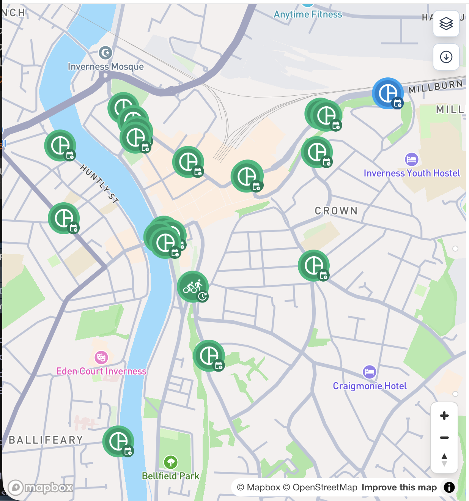

Millburn Road - Cycling Volume Analysis
infrastructure
case-study
data
Millburn-Rd
This is the third in a series of posts about a cycle lane in Millburn Road, Inverness. The previous post, detailing where we’re getting the data from can be found here.
What data are we looking at?
I’ve decided to concentrate on the main entry points and routes through the city. There’s a continuous counter placed anywhere you see this icon on the map below1:

This gives counts at the following locations:
- Millburn Road
- Ness Walk
- Greig Street
- Huntly Street
- Academy Street
- Crown Road
- Bank Street
- Bridge Street
- Castle Road
Both Millburn Road and Academy Street have two counters each, one for eastbound and one for westbound traffic. Since this analysis isn’t interested in the directional distinction, they have been combined into one count for each street.
Cycling volume history
The first number we want to look at is just how busy each counter is with cycle traffic. Figure 1 shows all of the cycle traffic volume data since collection started in March 2021. Millburn Road is highlighted orange, and you can mouse over the other lines to see which counter they correspond to.
A couple of things stand out on the chart before we address Millburn Road. The first is that the data in the 2021-2022 period looks quite messy. I think it’s reasonable to say that the travel patterns in the early post-pandemic years is sufficiently different to where we are now to give that data a separate look another time.
The second thing is the steep drop in counts at all sites in the winter 2024/25 period. I don’t know enough yet to explain it, but I do want to say I’m working on figuring it out and will publish what I find. It’s worth noting that cycle traffic appears to be overall lower after this blip. Until I know more about whether that’s real or an artefact of data collection, I’ll refrain from commenting on any trends over time.
Figure 2 shows the data starting in January 2023:
It’s clear that the Millburn Road counter has consistently been among the highest counts in the city. Other sites with similarly high cycling volume are Huntly Street (coloured ochre) and Ness Walk (coloured blue). The significant dip in volume in 2023/24 on Ness Walk was caused by its closure to upgrade the cycling infrastructure there (yay!).
Since 2025 is the most recent full year for which we have data2, the median count at each site in that year also gives a useful picture.
| Location | Median daily cycle count | Days with data |
|---|---|---|
| Ness Walk | 256 | 348 |
| Millburn Road | 218 | 362 |
| Bridge Street | 194 | 347 |
| Huntly Street | 168 | 348 |
| Academy Street | 152 | 349 |
| Bank Street | 122 | 349 |
| Greig Street | 119 | 347 |
| Castle Road | 102 | 351 |
| Crown Road | 19 | 352 |
This is a clearer way to show the main takeaway from this data: Millburn Road is, realtive to the rest of the city centre, busy with bicycles.
Conclusion
It’s fairly clear that historically, Millburn Road is unique within Inverness city centre for its ability to transport large numbers of cyclists alongside heavy motor traffic. This in itself is not entirely surprising as it contained the only section of segregated cycle lane next to a busy road in the city but it does highlight the importance of that lane.
To me, this makes the Highland Council’s decision to remove a section of it right at the most complex junction seem to go against their stated vision to make active travel an attractive and realistic choice for more people, more often, for more of their everyday journeys. I hope they will take a good look at this data as they plan for how they will move forward at that site. I think it makes a good case for improving and indeed extending the cycle lane along that corridor to enable even more people to arrive in the city by bicycle.